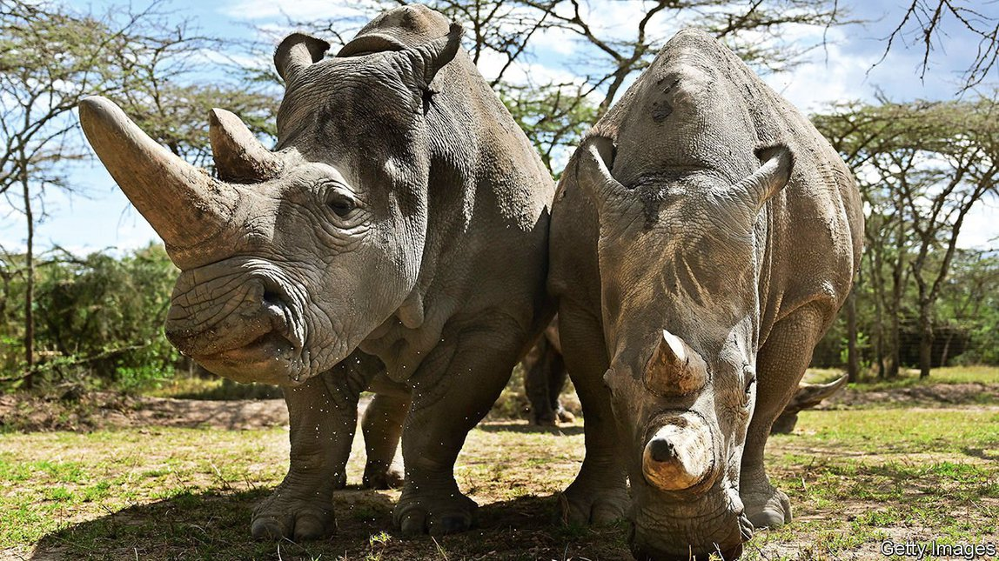
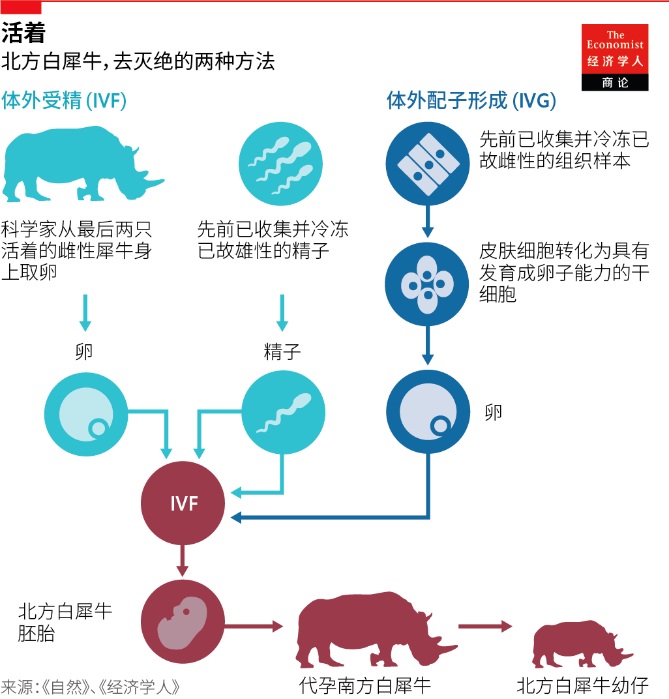
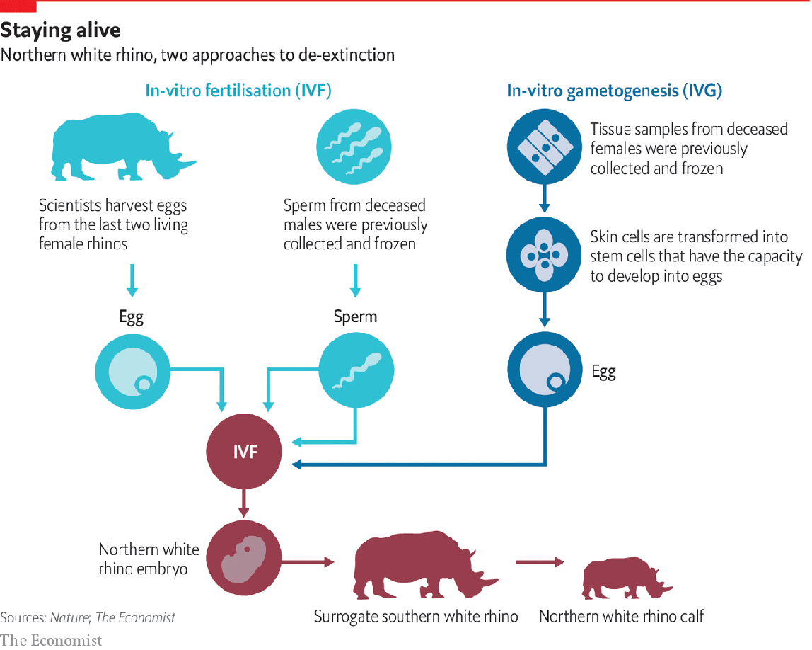

2021-07-01T07:05:52+00:00
起死回生
复活灭绝物种或很快成为可能
来自濒危物种的库存细胞还有其他用处【专题报道《保护生态多样性》系列之五】
二OO二年四月的一天晚些时候，一只漂亮的蓝色和米色的鸟，戴着白项圈和黑眼罩，被释放到夏威夷毛伊岛的茂密森林中。这只雌鸟是仅存的三只毛岛蜜雀（po'ouli，发音为 poh-oh-oolee）之一，这是1973年发现的一种蜜旋木雀。研究人员相信这三只鸟中有一只雄鸟，因此急于安排相亲。然而，这些鸟似乎丝毫不担心它们物种的命运。为助成好事，当天早些时候，一个团队抓住了这只雌鸟，给她安装了一个小型无线电发射器，然后把她放回了人们最后一次见到雄鸟的地方。第二天早上，他们开始用天线追踪雌鸟的进展。他们很快就找到了她——她正毅然决然地穿越全岛返回她自己的领地。
动物保护充满了这种失败的罗曼史。当一个物种减少到几个个体时，研究人员会不遗余力地建立包办婚姻。如果不能促成野外交配，他们可能会尝试圈养动物，然后将它们放回野外。用这种方法，加州神鹫从22只个体中恢复过来；阿拉伯大羚羊则是从仅仅9只开始。对于毛岛蜜雀，他们决定将这不情愿的三只圈养繁殖。雄鸟于 2004年9月被抓获。他年纪大了，只有一只眼睛，几周后就死了。另外两只鸟大约在同一时间被发现，然后再也没有见到过。
你可能会想，这就是毛岛蜜雀悲惨故事的结局了。但过去十年发展起来的生殖和遗传技术差不多意味着现在可以想象另一种结果了。这只独眼雄鸟的一组细胞被保存在圣地亚哥野生动物生物多样性银行（San Diego Wildlife Biodiversity Bank），人称“冷冻动物园”。保存野生物种的组织样本并不罕见：种子银行自20世纪初就开始这样做了。然而，在圣地亚哥的设施中，组织样本不仅被储存，而且在活细胞培养基中生长。保护遗传学主任奥利弗·莱德（Oliver Ryder）记得曾通过显微镜观察毛岛蜜雀的染色体，清楚意识到自己正在观察一个已经消失的物种的遗传物质。“对于很多人来说，‘灭绝’是一个抽象的概念，但对我们中的一些人来说，会有直观的发自肺腑的感受。”他说。
从理论上说，莱德等人正在开发的技术可以在物种的最后一个成员死亡很久之后创造出一个活的新生个体。他们不是第一批尝试这样做的人。2009年，一组研究人员宣布他们产下了一只小“布卡多”（bucardo），这是一种九年前灭绝的野山羊。取自最后一只雌性布卡多的皮肤活检留下了活细胞。该团队从这些细胞内取出了DNA束，将其注射到一只家山羊的空卵中。电击一下，他们将DNA与卵子的细胞“壳”融合在一起，产生了400多个胚胎，所有胚胎都携带了这只山羊的基因。超过200个胚胎被转移到代孕的家山羊的子宫中，最后只有一例活产。根据《动物生殖学》（Theriogenology）期刊的一篇报道，它于2003年通过剖腹产分娩，但只活了“几分钟”。
看起来不大好啊，多莉
生下这只短命的小布卡多的技术类似于1996年用于创造多莉（一只克隆绵羊）的技术。它的DNA主要是从单个个体遗传而来的。即使它活下来，也只能产生克隆种群，完全是生物多样性的反面——对生物多样性而言，遗传多样性至关重要。将一个物种从濒临灭绝的边缘拯救回来的努力必须在它减少到只有一个甚至三个个体之前很久就开始。
因此，毛岛蜜雀的冷冻细胞不太可能产生新的鸟类种群。但与它们一起存放在圣地亚哥的一些试管蕴含着另外一番前景。它们包含不是一头、而是12头北方白犀牛的遗骸——五头雄性和七头雌性。北方白犀牛属于所谓的“功能性灭绝”：最后一只雄性——取名“苏丹”——于2018年去世，只留下了两只雌性，这对在肯尼亚的母女分别叫“纳金”和“法图”。尽管如此，在2015年于维也纳举行的一次会议上，研究人员就“去灭绝”的一套双管齐下的方法达成了共识。
第一种方法由一个名为“生物救援”（BioRescue）的组织领导，它使用体外受精的一个版本，其中涉及的国际旅行比大多数人类手术都要多。自2019年以来，由研究人员、环保主义者、公园护林员和兽医组成的团队已经五次聚集在公园里，从一只或两只雌性的卵巢中收获卵母细胞（未成熟的卵细胞），手术过程中将其全身麻醉。卵母细胞立即被空运到意大利，在那里用保存在德国的死去雄性的解冻精子授精。精子通过针头直接注射到卵子中。然后将它们放置在一个专门设计的孵化器内。该孵化器配备了一个摄像头，让团队能够全程监控细胞发育过程。在培养皿中成功发育的任何胚胎都被放置在液氮中以安全保存，直到团队准备好将它们植入子宫。
最近一次取卵在今年3月28日进行。从法图身上获得了总共19个卵母细胞，其中14个接受了来自于2014年去世的雄性“苏尼”的精子授精。4个发育成可存活的胚胎，使冷冻胚胎总数达到9个。下一步将是将胚胎转移到代孕者身上。研究人员认为纳金和法图都不能安全怀孕，因此胚胎将被委托给雌性南方白犀牛，这是一种具有健康野生种群的相关物种。在植入它们之前，“生物救援”一直在使用南方白犀牛的细胞测试体外受精程序。这得到了看似健康的胚胎，但尚未有活产。该团队希望在野外而不是在欧洲的动物园进行胚胎移植能够提高成功的机会。
领导大部分工作的莱布尼茨动物与野生动物研究所（Leibniz Institute for Zoo and Wildlife Research）的托马斯·希尔德布兰特（Thomas Hildebrandt）说，胚胎移植的时间窗口很短，因为纳金和法图都很老了。“我们可以尝试很好地保存生物材料，”他说，“但我们无法保存社会知识。而且我们只有两只犀牛可以教小犀牛如何像北方白犀牛一样行事。”此外，这个体外受精策略仍然面临遗传多样性的基本限制。法图的胚胎只携带她和苏尼的基因。但储存在-196°C的圣地亚哥和其他冷冻库的细胞携带的基因要多得多，它们是拯救北方白犀牛的第二个策略的关键。
为了确定理论上能否建立一个健康的种群，莱德对圣地亚哥的收藏品进行了测序。“我们发现，这12头犀牛的遗传变异比南方白犀牛的［大约20,000 头］的现存种群更多，”他说，“如果我们能把这些细胞变成动物，那么北方白犀牛就没有理由不能恢复。”
现在需要的是将死去已久的犀牛的冷冻皮肤细胞变成能存活的卵子。日本九州大学的生殖生物学家林克彦及同事已经演示了一种方法。2016年，该团队用皮肤细胞和精子创造出了小鼠宝宝。他们的方法是从成年小鼠的尾尖取出细胞，在培养基中培养，然后用化学信号淹没，使其中一些细胞转化为“诱导性多能干细胞”——这种特殊的细胞可以发育成在小鼠体内发现的任何其他细胞，包括卵母细胞。接着将卵母细胞受精并植入代孕者的子宫，生下活体小鼠，再让它继续生产自己的后代。
当然，老鼠与犀牛非常不同。尽管如此，今年早些时候，圣地亚哥动物园野生动物联盟的玛丽莎·克洛狄（Marisa Korody）和拉霍亚的斯克里普斯研究所（Scripps Research Institute）的同事撰文称，他们已经成功地将12头死去的北方白犀牛中的9头的皮肤细胞转化为诱导性多能干细胞。生物救援也取得了类似的成功。并不是所有这样的细胞都是真正的多能细胞，因此团队是否能够获得卵母细胞也并非十拿九稳。不过，初步测试显现出了希望。
今天，圣地亚哥野生动物生物多样性银行的冷冻收藏品包含超过10,000种细胞系，属于1100种脊椎动物和亚种，另外还有尚未培养的组织和血液样本。其他生物库由英国诺丁汉大学运营的冷冻方舟（Frozen Ark）项目的成员持有。无论在未来几年内复活灭绝物种是否成真，此类生物库都已经可被用于改善濒危物种的遗传多样性。例如，美国黑足雪貂在20世纪几乎被捕杀殆尽，之后通过把幸存的18只圈养繁殖而获救。2015年，研究人员表明，用来自史密森尼保护生物学研究所（Smithsonian Conservation Biology Institute）的冷冻精子对雌性授精可以增加黑足雪貂的遗传多样性。
类似的工作有朝一日或可恢复具有商业价值的种群，例如受威胁的渔业，但前提是细胞现在被储存起来以用于未知的未来。尽管如此，并非所有组织都适合保存在液氮中。冷冻保存也十分昂贵，耗能巨大。到目前为止，根据意大利泰拉莫大学的约瑟夫·萨拉加斯蒂（Joseph Saragusty）及同事于2020年7月发表的一篇论文，仅有116个物种的精子被保留——约占所有哺乳动物的2%，另外还有“屈指可数的”物种的卵子和51个物种的胚胎。仅有约45个物种被报告利用冷冻哺乳动物精子获得活产。但是，在发明新技术或改进现有技术的同时，冷冻保存可以使物种处于假死状态。创建圣地亚哥生物库的库尔特·贝尼希克（Kurt Benirschke）的话很有先见之明：“你必须出于你还不了解的原因收集东西。”
2021-07-01T07:05:52+00:00
Back from the dead
Reviving extinct species may soon be possible
Banking cells from endangered species can help in other ways, too
LATE ONE day in April 2002, a delicate blue-beige bird with a white collar and black eye mask was released into the dense forest on the Hawaiian island of Maui. The bird, a female, was one of just three remaining po’ouli (pronounced poh-oh-oolee), a species of honeycreeper that had been discovered in 1973. Believing there to be one male among the three, researchers were desperate to arrange a match. The birds, however, did not appear in the least bit concerned about the fate of their species. To help things along, earlier that day a team had caught the female, fitted her with a small radio transmitter and set her free where the male had last been seen. The next morning they set off with aerials to track the female’s progress. They soon found her, resolutely making her way back across the island to her own territory.
Conservation is full of such failed romances. When a species is reduced to a few individuals, researchers will go to great lengths to set up arranged marriages. If wild matings cannot be facilitated, they may try to breed animals in captivity and then release them back into the wild. Thus, the California condor was brought back from 22 individuals; the Arabian oryx from just nine. With the po’ouli, the decision was made to bring the reluctant trio in for captive breeding. The male was caught in September 2004. He was old, had only one eye and died a few weeks later. The other two birds were spotted around the same time, then never seen again.
And that, you might think, was the end of the po’ouli’s tragic tale. But reproductive and genetic technologies developed in the past decade mean other outcomes are now conceivable, as it were. A cluster of cells from the one-eyed male is held at the San Diego Wildlife Biodiversity Bank, also known as the Frozen Zoo. Banking tissue samples from wild species is not unusual: seed banks have done this since the early 20th century. In the San Diego facility, however, tissue samples are not just stored, but are grown in living cell cultures. Oliver Ryder, director of conservation genetics, remembers peering through a microscope to look at the po’ouli’s chromosomes, aware that he was looking at the genetic material of a species that had already expired. “Extinction is, for a lot of people, kind of an abstract concept, but for some of us it has a really visceral feeling,” he says.
Dr Ryder and others are developing techniques that might, theoretically, make it possible to create a live newborn long after the last members of its species have died. They are not the first to attempt this. In 2009, a team of researchers announced they had delivered the kid of a bucardo, a species of wild goat that had gone extinct nine years earlier. A skin biopsy taken from the last female had produced live cells. The team removed the bundle of DNA from inside those cells and injected it into the emptied eggs of a domestic goat. Using a zap of electricity, they fused the DNA with the egg’s cellular “shell” and produced more than 400 embryos, all carrying the goat’s genes. Over 200 embryos were transferred to the wombs of surrogate domestic goats, leading to just one live birth. It was delivered by caesarean section in 2003, but lived for only “some minutes”, according to an account in the journal Theriogenology.
Not looking swell, Dolly
The technique that produced the short-lived bucardo kid was similar to that used to create Dolly, a cloned sheep, in 1996. Its DNA was primarily inherited from a single individual. Even if it had lived, it could only ever have given rise to a population of clones, the opposite of biological diversity, for which genetic diversity is essential. Efforts to rescue a species from the brink of extinction must begin long before it is reduced to just one individual, or even three.
The po’ouli’s frozen cells, therefore, are unlikely ever to give rise to a new population of birds. But alongside them in San Diego are tubes that hold a different promise. They contain the remains of not one but 12 northern white rhinoceroses, five males and seven females. The northern white rhino is what is known as “functionally extinct”: the last male, Sudan, died in 2018, leaving behind just two females, a mother-and-daughter pair in Kenya, dubbed Najin and Fatu. Nevertheless, at a meeting in Vienna in 2015, researchers agreed on a twin-track approach to de-extinction.
The first approach, led by a group called BioRescue, uses a version of in-vitro fertilisation involving rather more international travel than most human procedures. Five times since 2019, a team of researchers, conservationists, park rangers and veterinarians have gathered in the park to harvest oocytes (immature egg cells) from the ovaries of one or both females, who are placed under general anaesthetic for the procedure. The oocytes are immediately flown to Italy, where they are fertilised with thawed sperm from a dead male whose cells are banked in Germany. Sperm are injected through a needle directly into the eggs. They are then placed in a specially designed incubator equipped with a camera that allows the team to monitor the cells as they develop. Any embryos that successfully develop in the dish are placed in liquid nitrogen for safe-keeping until such a time as the team is ready to implant them into a womb.
The most recent egg collection was performed on March 28th. A total of 19 oocytes were obtained from Fatu; 14 were fertilised with sperm from Suni, a male who died in 2014. Four developed into viable embryos, bringing the total number of frozen embryos to nine. The next step will be to transfer embryos to a surrogate. Neither Najin nor Fatu is thought to be capable of a safe pregnancy, so the embryos will instead be entrusted to female southern white rhinos, a related species with a healthy wild population. Before implanting them, BioRescue has been testing the IVF procedure using southern white rhino cells. This has resulted in seemingly healthy embryos, but none has yet led to a live birth. The team hopes that doing the embryo transfers in the wild, rather than at a zoo in Europe, will improve the chances of success.
Thomas Hildebrandt of the Leibniz Institute for Zoo and Wildlife Research, who is leading much of the work, says there is a short window for the transfers to happen because Najin and Fatu are both quite old. “We can try to preserve biological material very nicely,” he says, “but we can’t preserve social knowledge. And we have only two rhinos which can teach the calf how to behave as a northern white rhino.” Moreover, this IVF approach still faces the fundamental limits of genetic diversity. Fatu’s embryos carry only her and Suni’s genes. But the cells stored at -196°C in San Diego and other frozen stores carry much more, and they hold the key to the second strategy for saving the northern white rhino.
To determine whether they could theoretically build a healthy population, Dr Ryder sequenced the San Diego collection. “We found that there was more genetic variation in those 12 than in the [roughly 20,000-strong] standing population of southern white rhinos,” he says. “If we could turn those cells into animals, there is no reason the northern white rhino shouldn’t be able to recover.”
What is needed now is the means of turning frozen skin cells from long-dead rhinos into viable eggs. A way to do that has been demonstrated by Katsuhiko Hayashi, a reproductive biologist at Japan’s Kyushu University, and colleagues. In 2016, the team created baby mice from skin cells and sperm. They did this by taking cells from the tail tips of adult mice, growing them in culture, then flooding them with chemical signals that reprogrammed some of them to become “induced pluripotent stem cells”—special cells that can develop into any other cell found in the body, including oocytes. The oocytes were then fertilised and implanted into the wombs of surrogates, resulting in live mice, which went on to produce their own offspring.
A mouse, of course, is very different to a rhinoceros. Nevertheless, earlier this year, Marisa Korody of the San Diego Zoo Wildlife Alliance and colleagues at the Scripps Research Institute in La Jolla wrote that they had successfully reprogrammed skin cells belonging to nine of the 12 dead northern white rhinos to become induced pluripotent stem cells. BioRescue has had similar success. Not all such cells are truly pluripotent, so it is not a given that the team will be able to make oocytes. Initial tests, though, are promising.
Today, the frozen collection at the San Diego Wildlife Biodiversity Bank contains more than 10,000 cell lines belonging to 1,100 species and subspecies of vertebrates, plus tissue and blood samples that have not yet been cultured. Other biobanks are held by members of the Frozen Ark project, run by Britain’s University of Nottingham. Whether or not reviving extinct species becomes possible in the next few years, such biobanks can already be used to improve genetic diversity in endangered species. The American black-footed ferret, for example, was all but wiped out in the 20th century before being rescued through captive breeding of 18 surviving animals. In 2015 researchers showed that inseminating females with frozen sperm from the Smithsonian Conservation Biology Institute could increase the ferrets’ genetic diversity.
Similar work could one day restore commercially valuable populations, such as threatened fisheries—but only if cells are banked now for an unknown future. That said, not all tissues lend themselves to being preserved in liquid nitrogen. Cryopreservation is also expensive and energy-intensive. So far, according to a paper published in July 2020 by Joseph Saragusty at the University of Teramo in Italy and colleagues, sperm from just 116 species, or approximately 2% of all mammals, have been preserved, as well as eggs from “just a handful” and embryos from 51 species. Live births produced from frozen mammalian sperm have been reported in only around 45 species. But cryopreservation can hold species in suspended animation while new technologies are invented or existing ones improved. As Kurt Benirschke, who founded the San Diego collection, had the foresight to declare: “You must collect things for reasons you don’t yet understand”. ■
2021-07-01T07:05:52+00:00
起死回生
復活滅絕物種或很快成為可能
來自瀕危物種的庫存細胞還有其他用處【專題報道《保護生態多樣性》系列之五】
二OO二年四月的一天晚些時候，一隻漂亮的藍色和米色的鳥，戴着白項圈和黑眼罩，被釋放到夏威夷毛伊島的茂密森林中。這隻雌鳥是僅存的三隻毛島蜜雀（po'ouli，發音為 poh-oh-oolee）之一，這是1973年發現的一種蜜旋木雀。研究人員相信這三隻鳥中有一隻雄鳥，因此急於安排相親。然而，這些鳥似乎絲毫不擔心它們物種的命運。為助成好事，當天早些時候，一個團隊抓住了這隻雌鳥，給她安裝了一個小型無線電發射器，然後把她放回了人們最後一次見到雄鳥的地方。第二天早上，他們開始用天線追蹤雌鳥的進展。他們很快就找到了她——她正毅然決然地穿越全島返回她自己的領地。
動物保護充滿了這種失敗的羅曼史。當一個物種減少到幾個個體時，研究人員會不遺餘力地建立包辦婚姻。如果不能促成野外交配，他們可能會嘗試圈養動物，然後將它們放回野外。用這種方法，加州神鷲從22隻個體中恢復過來；阿拉伯大羚羊則是從僅僅9隻開始。對於毛島蜜雀，他們決定將這不情願的三隻圈養繁殖。雄鳥於 2004年9月被抓獲。他年紀大了，只有一隻眼睛，幾周後就死了。另外兩隻鳥大約在同一時間被發現，然後再也沒有見到過。
你可能會想，這就是毛島蜜雀悲慘故事的結局了。但過去十年發展起來的生殖和遺傳技術差不多意味着現在可以想象另一種結果了。這隻獨眼雄鳥的一組細胞被保存在聖地亞哥野生動物生物多樣性銀行（San Diego Wildlife Biodiversity Bank），人稱“冷凍動物園”。保存野生物種的組織樣本並不罕見：種子銀行自20世紀初就開始這樣做了。然而，在聖地亞哥的設施中，組織樣本不僅被儲存，而且在活細胞培養基中生長。保護遺傳學主任奧利弗·萊德（Oliver Ryder）記得曾通過顯微鏡觀察毛島蜜雀的染色體，清楚意識到自己正在觀察一個已經消失的物種的遺傳物質。“對於很多人來說，‘滅絕’是一個抽象的概念，但對我們中的一些人來說，會有直觀的發自肺腑的感受。”他說。
從理論上說，萊德等人正在開發的技術可以在物種的最後一個成員死亡很久之後創造出一個活的新生個體。他們不是第一批嘗試這樣做的人。2009年，一組研究人員宣布他們產下了一隻小“布卡多”（bucardo），這是一種九年前滅絕的野山羊。取自最後一隻雌性布卡多的皮膚活檢留下了活細胞。該團隊從這些細胞內取出了DNA束，將其注射到一隻家山羊的空卵中。電擊一下，他們將DNA與卵子的細胞“殼”融合在一起，產生了400多個胚胎，所有胚胎都攜帶了這隻山羊的基因。超過200個胚胎被轉移到代孕的家山羊的子宮中，最後只有一例活產。根據《動物生殖學》（Theriogenology）期刊的一篇報道，它於2003年通過剖腹產分娩，但只活了“幾分鐘”。
看起來不大好啊，多莉
生下這隻短命的小布卡多的技術類似於1996年用於創造多莉（一隻克隆綿羊）的技術。它的DNA主要是從單個個體遺傳而來的。即使它活下來，也只能產生克隆種群，完全是生物多樣性的反面——對生物多樣性而言，遺傳多樣性至關重要。將一個物種從瀕臨滅絕的邊緣拯救回來的努力必須在它減少到只有一個甚至三個個體之前很久就開始。
因此，毛島蜜雀的冷凍細胞不太可能產生新的鳥類種群。但與它們一起存放在聖地亞哥的一些試管蘊含著另外一番前景。它們包含不是一頭、而是12頭北方白犀牛的遺骸——五頭雄性和七頭雌性。北方白犀牛屬於所謂的“功能性滅絕”：最後一隻雄性——取名“蘇丹”——於2018年去世，只留下了兩隻雌性，這對在肯尼亞的母女分別叫“納金”和“法圖”。儘管如此，在2015年於維也納舉行的一次會議上，研究人員就“去滅絕”的一套雙管齊下的方法達成了共識。
第一種方法由一個名為“生物救援”（BioRescue）的組織領導，它使用體外受精的一個版本，其中涉及的國際旅行比大多數人類手術都要多。自2019年以來，由研究人員、環保主義者、公園護林員和獸醫組成的團隊已經五次聚集在公園裡，從一隻或兩隻雌性的卵巢中收穫卵母細胞（未成熟的卵細胞），手術過程中將其全身麻醉。卵母細胞立即被空運到意大利，在那裡用保存在德國的死去雄性的解凍精子授精。精子通過針頭直接注射到卵子中。然後將它們放置在一個專門設計的孵化器內。該孵化器配備了一個攝像頭，讓團隊能夠全程監控細胞發育過程。在培養皿中成功發育的任何胚胎都被放置在液氮中以安全保存，直到團隊準備好將它們植入子宮。
最近一次取卵在今年3月28日進行。從法圖身上獲得了總共19個卵母細胞，其中14個接受了來自於2014年去世的雄性“蘇尼”的精子授精。4個發育成可存活的胚胎，使冷凍胚胎總數達到9個。下一步將是將胚胎轉移到代孕者身上。研究人員認為納金和法圖都不能安全懷孕，因此胚胎將被委託給雌性南方白犀牛，這是一種具有健康野生種群的相關物種。在植入它們之前，“生物救援”一直在使用南方白犀牛的細胞測試體外受精程序。這得到了看似健康的胚胎，但尚未有活產。該團隊希望在野外而不是在歐洲的動物園進行胚胎移植能夠提高成功的機會。
領導大部分工作的萊布尼茨動物與野生動物研究所（Leibniz Institute for Zoo and Wildlife Research）的托馬斯·希爾德布蘭特（Thomas Hildebrandt）說，胚胎移植的時間窗口很短，因為納金和法圖都很老了。“我們可以嘗試很好地保存生物材料，”他說，“但我們無法保存社會知識。而且我們只有兩隻犀牛可以教小犀牛如何像北方白犀牛一樣行事。”此外，這個體外受精策略仍然面臨遺傳多樣性的基本限制。法圖的胚胎只攜帶她和蘇尼的基因。但儲存在-196°C的聖地亞哥和其他冷凍庫的細胞攜帶的基因要多得多，它們是拯救北方白犀牛的第二個策略的關鍵。
為了確定理論上能否建立一個健康的種群，萊德對聖地亞哥的收藏品進行了測序。“我們發現，這12頭犀牛的遺傳變異比南方白犀牛的［大約20,000 頭］的現存種群更多，”他說，“如果我們能把這些細胞變成動物，那麼北方白犀牛就沒有理由不能恢復。”
現在需要的是將死去已久的犀牛的冷凍皮膚細胞變成能存活的卵子。日本九州大學的生殖生物學家林克彥及同事已經演示了一種方法。2016年，該團隊用皮膚細胞和精子創造出了小鼠寶寶。他們的方法是從成年小鼠的尾尖取出細胞，在培養基中培養，然後用化學信號淹沒，使其中一些細胞轉化為“誘導性多能幹細胞”——這種特殊的細胞可以發育成在小鼠體內發現的任何其他細胞，包括卵母細胞。接着將卵母細胞受精並植入代孕者的子宮，生下活體小鼠，再讓它繼續生產自己的後代。
當然，老鼠與犀牛非常不同。儘管如此，今年早些時候，聖地亞哥動物園野生動物聯盟的瑪麗莎·克洛狄（Marisa Korody）和拉霍亞的斯克里普斯研究所（Scripps Research Institute）的同事撰文稱，他們已經成功地將12頭死去的北方白犀牛中的9頭的皮膚細胞轉化為誘導性多能幹細胞。生物救援也取得了類似的成功。並不是所有這樣的細胞都是真正的多能細胞，因此團隊是否能夠獲得卵母細胞也並非十拿九穩。不過，初步測試顯現出了希望。
今天，聖地亞哥野生動物生物多樣性銀行的冷凍收藏品包含超過10,000種細胞系，屬於1100種脊椎動物和亞種，另外還有尚未培養的組織和血液樣本。其他生物庫由英國諾丁漢大學運營的冷凍方舟（Frozen Ark）項目的成員持有。無論在未來幾年內復活滅絕物種是否成真，此類生物庫都已經可被用於改善瀕危物種的遺傳多樣性。例如，美國黑足雪貂在20世紀幾乎被捕殺殆盡，之後通過把倖存的18隻圈養繁殖而獲救。2015年，研究人員表明，用來自史密森尼保護生物學研究所（Smithsonian Conservation Biology Institute）的冷凍精子對雌性授精可以增加黑足雪貂的遺傳多樣性。
類似的工作有朝一日或可恢復具有商業價值的種群，例如受威脅的漁業，但前提是細胞現在被儲存起來以用於未知的未來。儘管如此，並非所有組織都適合保存在液氮中。冷凍保存也十分昂貴，耗能巨大。到目前為止，根據意大利泰拉莫大學的約瑟夫·薩拉加斯蒂（Joseph Saragusty）及同事於2020年7月發表的一篇論文，僅有116個物種的精子被保留——約佔所有哺乳動物的2%，另外還有“屈指可數的”物種的卵子和51個物種的胚胎。僅有約45個物種被報告利用冷凍哺乳動物精子獲得活產。但是，在發明新技術或改進現有技術的同時，冷凍保存可以使物種處於假死狀態。創建聖地亞哥生物庫的庫爾特·貝尼希克（Kurt Benirschke）的話很有先見之明：“你必須出於你還不了解的原因收集東西。”